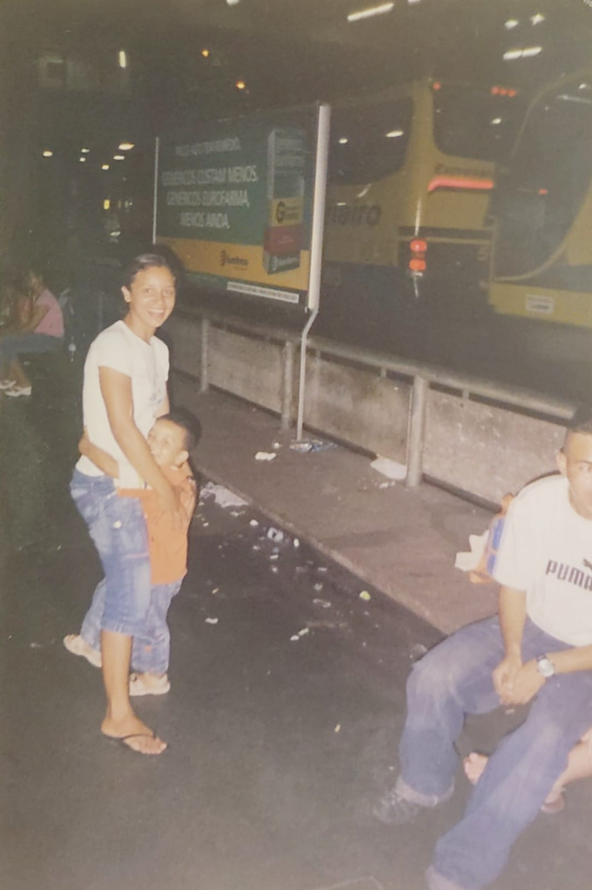

Jantar com minha mãe
Receita de Sushi
Ingredientes:
Algass
Arroz japonês
Gergelim
Vinagre de arroz
Requeijão
Salmão
Modo de Preparo:
Leve o arroz ao fogo com a água já fervendo e cozinhe por cerca de 10 minutos.
Tire o arroz da panela com cuidado e coloque-o em uma bacia redonda.
Coloque o arroz na alga até a metade da mesma.
Coloque o gergilim, em seguida coloque o salmão em forma de tira de ponta a ponta
na alga, espalhe o requeijão ao lado do salmão e em seguida o enrole.
Corte em pequenas rodelas e sirva.
